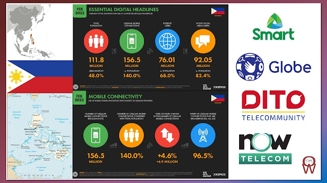

Mobile Data Limits

Source: https://www.operatorwatch.com/2022/06/5g-in-philippines-is-gaining-momentum.html
Mobile data, sometimes referred to as cellular data, is the internet connectivity delivered to your mobile devices wirelessly. If you're using the internet on your phone, and it’s not connected to Wi-Fi, you’re using mobile data. All the information is sent and received by your smartphone via a wireless 3G, 4G or even 5G connection. With 98% of the UK covered by 3G, 4G and 5G, getting online with your phone has never been easier.
Data capping per se is really not bad. Some countries in the world even implement their own FUP. But unfortunately, the implementation here in the Philippines punishes both the innocent and the abusive users.
Heavy users are just 3% of the total data subscribers but according to Globe, they can contribute to degradation of the network performance during peak hours.
Mobile data is measured in megabytes (MB) and gigabytes (GB). There are 1000 MB in 1 GB of data, and most phone contracts will offer a minimum of 1GB. Your mobile data allowance can be part of either a SIM only, pay-as-you-go or pay monthly smartphone deal. You’ll be allocated data within the plan you choose but if you exceed this limit you’ll face extra charges.
In terms of function both Wi-Fi and mobile data enable you to browse the internet, stream media, send emails and have video calls on your phone. The key difference is that your phones are receiving the signal from a wireless router when connected to Wi-Fi. You will have a contract with your Wi-Fi provider which will be paid separately to your phone and you will be connected to Wi-Fi if you are within the range of the router. Ultimately it enables you to send and receive data at no additional charge on your phone contract.
Global mobile data traffic is projected to grow by nearly 25% each year, an astounding figure driven by the proliferation of smartphones, faster networks like 5G and data-hungry applications. Another research study highlights that while younger demographics such as teens and young adults tend to use more data on mobile, older age groups are quickly catching up, primarily for activities like video calling and social media.
As technology evolves, so will our reliance on digital connectivity. Being able to balance digital habits with data limits is a skill that will continue to pay off, not just for your wallet but also for smoother, more efficient internet usage. Keeping an eye on your data consumption is key to staying within limits and avoiding surprises on your bill. Here are some tried-and-true methods to ensure you have a clear picture of how many gigabytes you’ve burned through:
- Built-in smartphone tools: both Android and iOS devices offer built-in data usage monitors. On Android, you can go to Settings > Network & Internet > Data Usage to see the breakdown by app, whereas on iOS, check Settings > Cellular to see how much data each app has consumed. Reset these metrics at the start of each billing cycle to get accurate monthly readings.
- Built-in smartphone tools: both Android and iOS devices offer built-in data usage monitors. On Android, you can go to Settings > Network & Internet > Data Usage to see the breakdown by app, whereas on iOS, check Settings > Cellular to see how much data each app has consumed. Reset these metrics at the start of each billing cycle to get accurate monthly readings.
- Third-party apps: if you want more detailed analytics or real-time alerts, you can explore third-party apps. Some not only track usage but also forecast if you’re at risk of going over your cap based on historical trends.
References
- GO. (2025, February 5). Understanding data caps: How to stay in control of your usage and keep it in check. GO Portal. https://www.go.com.mt/blogs/understanding-data-caps/
- Burkinshaw, A. (2025, October 28). How much mobile data do you need? Data allowance, explained. Uswitch. https://www.uswitch.com/mobiles/guides/internet-data-allowances/
- Moneymax. (2023, August 30). The fair use policy in the Philippines: Is it legal to download movies? https://www.moneymax.ph/lifestyle/articles/fair-use-policy